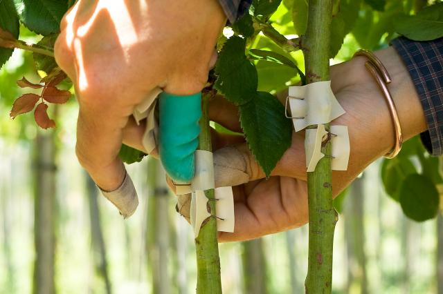

What is Plant Grafting?

Graft, in horticulture, the joining together of
plant parts by means of tissue regeneration. Grafting
is the act of placing a portion of one plant (bud or scion) into or
on a stem, root, or branch of another (stock) in such a way that a
union will be formed and the partners will continue to grow. The part
of the combination that provides the root is called the stock;
the added piece is called the scion. When more than two parts
are involved, the middle piece is called the interstock. When the
scion consists of a single bud, the process is called budding.
Grafting and budding are the most widely
used vegetative propagation methods.
The principles involved in grafting are based on the
matching of scion and stock cambiums (meristematic tissue,
the cells of which are
undifferentiated and capable of frequent cell division).
Cambial tissue in most woody trees and
shrubs is an inconspicuous single cell layer covering the central core
of wood and lying
directly beneath the bark
What Are The Reasons For Grafting?
One of the prominent reasons many people choose to go with the grafting method
propagation is that
they want the plant to inherit some of
the characteristics of the rootstock. Some of the traits include disease resistance,
drought tolerance, or hardiness. Here are some of the reasons why people consider grafting as an option for propagation:
- Grafting is often chosen when one wants to change varieties or develop new cultivars.
You can get an improved variety or cultivar if the scion is compatible with the rootstock.
- Certain fruit trees require pollination by a different variety of fruit trees.
This is because they cannot self-pollinate, and this process is called cross-pollination.
- Grafting can be an excellent option to take advantage of particular rootstocks with superior growth habits.
- When there is an incompatibility between scion and rootstock, the resulting interlock can be particularly
valuable and beneficial. Some of the benefits include cold hardiness or disease resistance.
- You will be able to perpetuate clones of a particular plant with the help of Grafting, unlike vegetative cutting.
- Whether caused by maintenance equipment or by disease, winter storms, or
rodents, there is always damage caused to plants. The procedure called inarching,
bridge grafting, or approach grafting is used to repair
the damage to the plants.
Advantages of Grafting
Despite being labour-intensive, vegetative propagation by Grafting is undertaken for several reasons.
Here are the advantages associated with it:
- It helps impart hardiness or disease resistance which is found in the rootstock.
- It shortens the first flower production time of fruits or flowers by the scion.
- You can retain the leaf, floral, or fruit characters in scion cultivars.
- Grafting provides the most economical use of scion material if you have stem-cutting-producing roots.
-
What Are The Types Of Grafting?
- Cleft Grafting
- Four Flap Grafting
- Side Veneer Grafting
- Bark Grafting
- Splice Grafting
plant propagation method by grafting